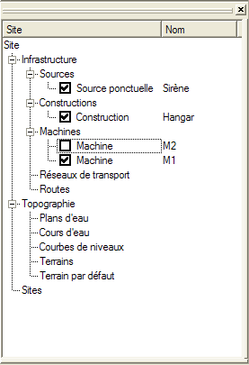

Cette vue est principalement composée d'un arbre représentant l'arborescence du site courant :

L'élément racine de la liste est le site courant de l'espace de travail, qui peut être associé au projet courant s'il existe. Ce site peut lui-même être composé de sites, appelés sites imbriqués.
Pour visualiser le site complet dans une fenêtre 3D, il suffit de cliquer droit sur le site et de choisir "Modeleur", une fenêtre de type modeleur de site s'affichera alors. Cette opération est aussi possible pour les machines et les constructions, un modeleur de machine ou un modeleur de bâtiment s'affichera, respectivement.
Dans un site, on distingue les éléments d'infrastructure et ceux de topographie.
Eléments d'infrastructure :
Les éléments de type source, construction ou machine peuvent être ajoutés depuis la bibliothèque (choix "Ajouter") ou nouvellement créés (choix "Nouveau").
Les cases à cocher à côté de certains éléments permettent d'activer ou non un élément dans le calcul courant. Il est ainsi possible de faire des sélections pour effectuer des cas de calcul différents.
Il est aussi possible de lancer le calcul acoustique sur une machine ou une construction en validant le choix "Calculer" dans le menu contextuel.
Eléments de topographie :
Pour chaque élément ayant une représentation graphique il est possible d'activer ou désactiver l'affichage dans les modeleurs ouverts de la boîte englobante qui leur est associée, cela se fait par le choix "Localiser" du menu contextuel.
Le choix "Exporter" permet simplement d'enregistrer l'élément actif dans un fichier au format XML, pour être échangé par exemple, cf. "Echande de données métiers".